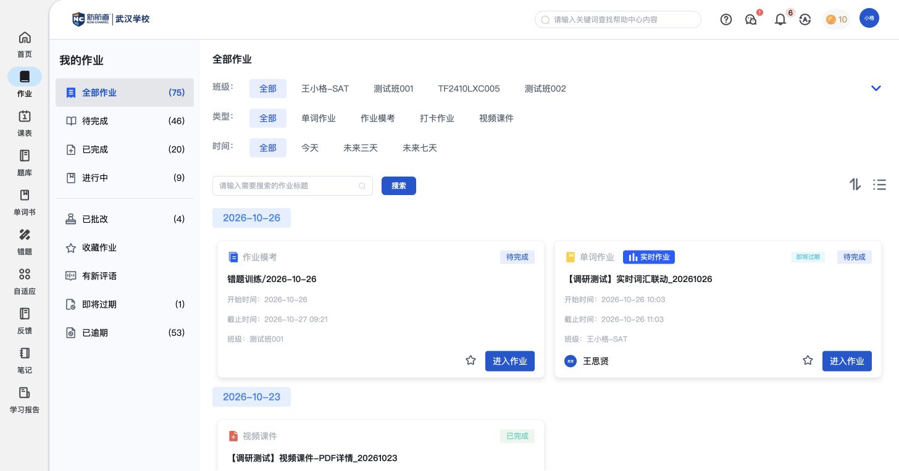
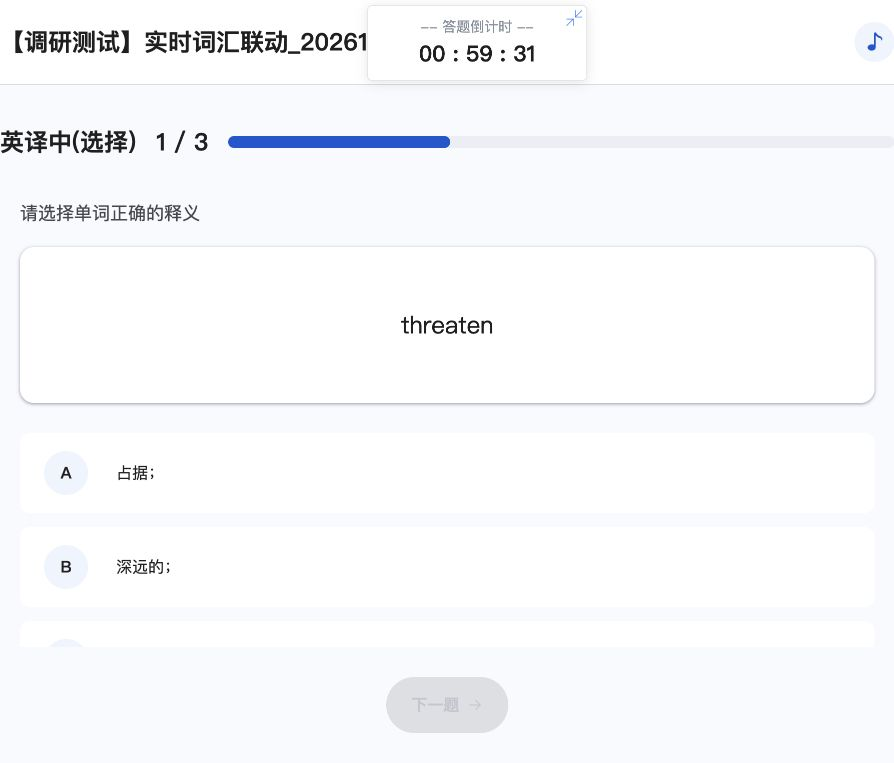
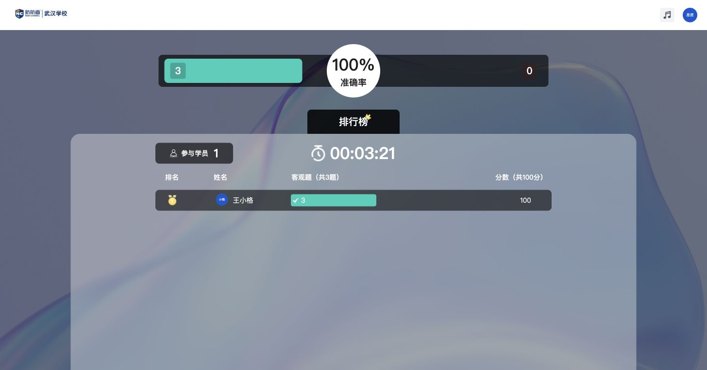
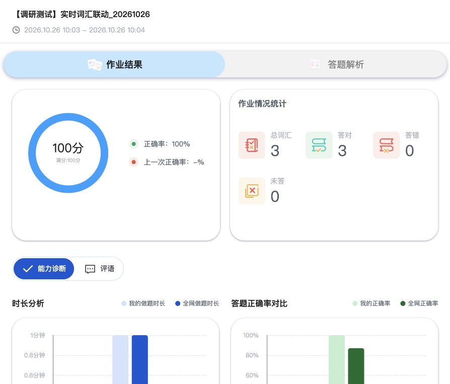
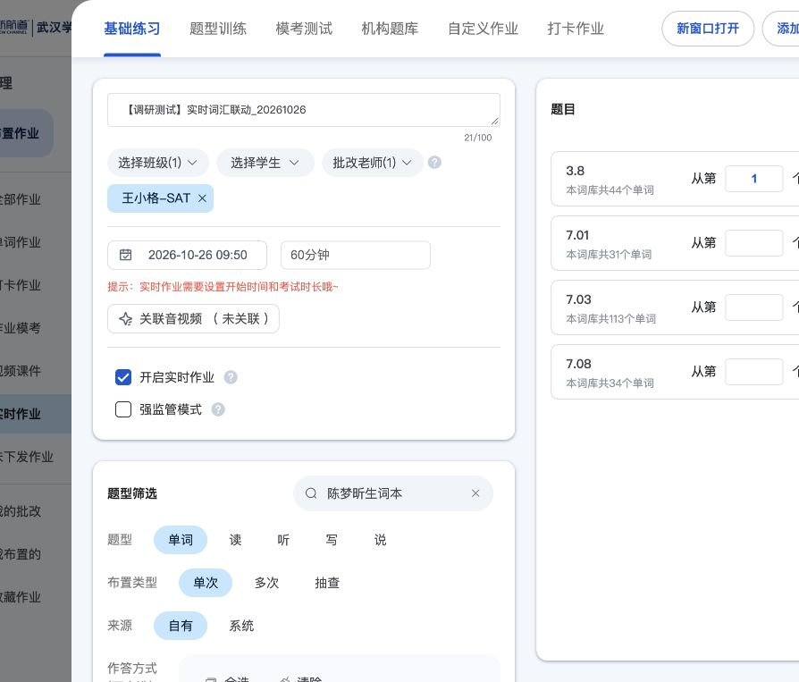

师生联动：实时作业与PDF学习记录
2026-10-26｜王思贤与王小格的测试环境实操。这里集中说明两端如何衔接；完整的词汇结果、解析、评语等共用能力回到作业报告阅读。
实时作业：统一组织一轮练习
1. 教师安排选择内容、接收班级、统一开始时间和时长，开启实时模式。本次3词、1名学生；实际布置时间为10:03至11:03。
2. 学生进入我的作业保留单词作业类型，增加实时作业标签；进入等待区看到参与人数和名单。
3. 到时作答本次到设定时间自动进入三词英译中练习，显示答题倒计时；未操作教师手动开始。
4. 提交与收束学生提交后等待教师结束。教师看参与、对错、准确率和排行榜，主动结束后显示总分并可进入答题详情。
5. 课后回顾学生任务变为已完成，回到通用成绩与解析。教师、学生均为100分，3题全对。
实际样例：【调研测试】实时词汇联动_20261026，任务14753411；词库0411第1起3词（threaten、restrict、endanger），英译中选择，王小格-SAT。教师结束后看板计时00:03:21；学生作答结果保留10:03—10:04。






PDF学习记录：从学生打开到教师完成数
前一轮已确认学生收到并打开PDF，重新进入学生作业列表显示已完成。本轮回教师端核对同一任务，完成数为1/1，王小格个人进度也是1/1。由此确认该样例的两端状态关联。

适用范围与待补
- 实时样例只有1名学生、3个客观词汇题；强监管未开启，教师手动提前开始未操作。多人过程变化、其他题型和主观题批改仍需代表样例。
- 教师结束后，学生列表的截止时间变为10:06；教师管理列表仍显示原计划11:03。报告分别记录可见字段，不推断其统一计算规则。
- PDF结论不能替代音视频的播放时长、完成条件和防跳读规则。
- 两端登录互相替换身份，切换期间出现登录失效提示属于本次操作条件；未当作实时作业本身的功能缺陷。
草稿配置与提交条件（辅助记录）
实时模式需要开始时间和考试时长。早于当前时间的草稿提交被提示不能小于当前时间，调整为10:03后成功。早期草稿使用陈梦昕词书，未生成任务；最终成功样例为0411三词。此处仅保留配置入口依据。

原始操作记录
全部截图与页面观察
- TL01截图 · 页面观察 — 教师端PDF详情显示已完成，完成数1/1；与此前学生打开PDF后完成状态对应。
- TL02截图 · 页面观察 — 实时作业布置设置：王小格-SAT、2026-10-26 09:50、60分钟、开启实时作业，强监管未开启。
- TL03截图 · 页面观察 — 实时测试内容：单词记忆，陈梦昕生词本3.8第1至3个，fundraiser、power go out、make of；作答方式英译中选择。
- TL04截图 · 页面观察 — 重新配置实时任务，开始时间保留2026-10-26 10:00、60分钟；仅王小格-SAT，基础词汇0411第1起3词，英译中选择。此前09:50配置未找到生成记录。
- TL05截图 · 页面观察 — 页面确认实时作业布置成功，可从进入作业、作业管理、我的班级进入实时作业。实际有效开始时间10:03，60分钟；0411第1起3词threaten/restrict/endanger。
- TL06截图 · 页面观察 — 教师实时作业开始前页面：距离答题开始倒计时、开始入口、参与学员0。任务14753411。
- SL01截图 · 页面观察 — 学生作业列表已收到单词作业，带实时作业标签；显示10:03至11:03、待完成、即将过期、班级王小格-SAT及进入作业。
- SL02截图 · 页面观察 — 学生进入实时作业后等待老师开启作答，显示倒计时与参与学员1、王小格；提示听到提示音将前往答题。
- SL03截图 · 页面观察 — 到设定10:03后，学生页面自动进入基础练习，英译中选择1/3；显示统一答题倒计时。此次未手动点击教师开始。
- SL04截图 · 页面观察 — 学生完成三个词并确认提交后，页面显示请等待老师结束答题，倒计时仍继续；未直接展示普通结果。
- TL07截图 · 页面观察 — 教师侧实时看板：参与学员1、客观题共3题、王小格答对3、准确率100%、排行榜及剩余计时。学生已交卷，教师尚未结束。
- TL08截图 · 页面观察 — 教师结束实时作业后：参与1人、客观题3题全对、100分、准确率100%、排行榜；答题已结束，可查看答题详情。
- TL09截图 · 页面观察 — 教师查看答题详情进入共用基础练习结果页：王小格100分、正确率100%、总词汇3、对3错0未答0，并有作业结果/答题解析/答题录屏、能力诊断和评语。
- TL10截图 · 页面观察 — 教师逐词解析可见三题对错和分别用时24/30/17秒，第一题threaten的学生答案D与正确答案D。
- TL11截图 · 页面观察 — 完整PDF教师详情：作业已完成、完成数1/1、学生王小格1/1；可切课件页。
- TL12截图 · 页面观察 — 教师管理列表保留实时标签、三题、平均成绩100、完成数1、学生数1；结束后仍显示原计划10:03至11:03。
- SL05截图 · 页面观察 — 教师结束后重新登录学生端：该实时任务显示已完成，截止时间10:06，查看结果入口；原计划11:03与此处结束后显示的时间不同，未推断统一时间字段规则。
- SL06截图 · 页面观察 — 学生实时作业结果：100分、正确率100%、三词全对；回到共用作业结果/答题解析，含能力诊断与评语入口。


本轮新增1份测试实时作业，完成3词作答、提交并由教师结束；未另外发送评语、通知或纠错。